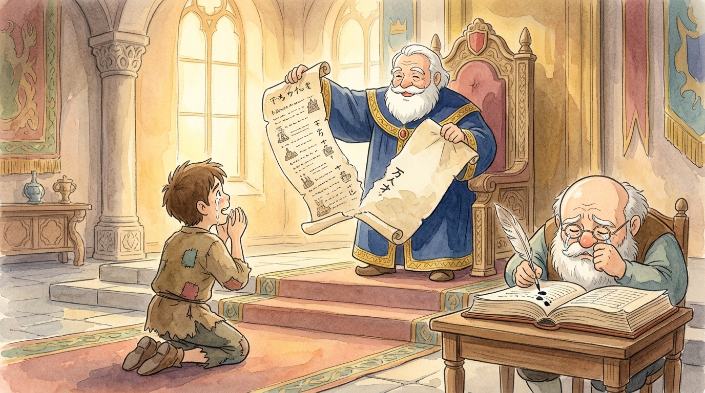
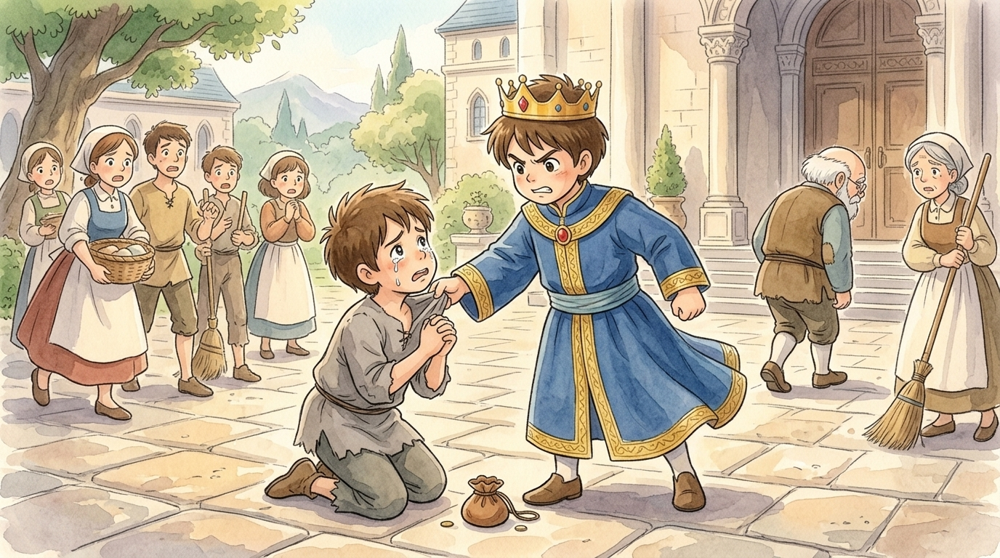

One day Peter came to Jesus with a question he clearly thought was generous: "Lord, how many times shall I forgive someone who wrongs me? Up to seven times?" (The teachers of the day suggested three, so Peter was doubling it with a bonus.) Jesus answered: "Not seven times, but seventy-seven times" — and then told a story.1 We shall read it the way the royal accountant experienced it: through two ledger books, one enormous, one tiny. Sharpen your quills; check my arithmetic as we go.
📚 Ledger One: the unpayable page
The king decided to settle accounts with his servants, and I, the royal accountant, laid out the books. And there, on the heaviest page of the great ledger, stood the account of Servant A: ten thousand talents.
Let me help you feel that number, because Jesus chose it as a joke with a dagger inside. One talent was about twenty years' wages. Ten thousand talents is therefore about two hundred thousand YEARS of wages — more than the taxes of entire kingdoms. "Ten thousand" was the biggest number ordinary Greek had; "talent" the biggest unit of money. It's like saying he owed a gazillion billion: a debt no servant could ever, ever repay.2 How does one man even RUN UP such a debt? The story doesn't say. The story doesn't care. The point is the size: unpayable.
The law of that world was grim: the man and his family faced being sold into servitude, everything he owned seized — and still the page would not balance. And the servant fell on his knees before the throne: "Be patient with me, and I will pay back everything!" (He could not have, of course. Not in a thousand lifetimes. Kneeling men say such things.)
And the king looked at him a long moment. And then — I record it exactly as it happened, though my quill trembled — the king took pity on him, canceled the entire debt, and let him go.
Account of Servant A: ten thousand talents… CANCELED. Paid: nothing. Forgiven: everything. Margin note: In forty years of book-keeping I have never written such an entry. The king absorbed the whole loss himself. The servant floated out of the throne room like a man reborn. I confess I wept on the page — see the ink-blot.3

📚 Ledger Two: the pocket-money page
Now for the second book — the small one, where servants' debts to EACH OTHER are kept. That very same servant, minutes out of the throne room, still wearing his freedom like a new coat, met Servant B in the courtyard — a fellow who owed him a hundred denarii. Check the arithmetic with me: a hundred days' wages. Three months' pay. Real money, I grant you — perhaps like a classmate owing you your saved-up pocket money. But set the two pages side by side, as I did that evening, and laugh or weep: the debt he had just been forgiven was about six hundred thousand times larger than the debt owed to him.
And what did the forgiven man do? He grabbed his fellow servant by the throat. "Pay back what you owe me!" And his fellow servant fell to his knees and begged — mark this — in the exact same words the first man had used before the king not an hour before: "Be patient with me, and I will pay it back." (And HIS promise, note, was actually possible!)
Surely now he remembers. Surely the same words will unlock the same mercy. Surely a man just carried out of an ocean will spare a cupful…
He refused. He had the man thrown into debtors' prison until he could pay. The courtyard went silent. And the other servants — I among them — were so grieved that we went and told the king everything.4

📚 The books are reopened
The king summoned him back, and the throne room was very cold this time.
And in his anger the king handed him over to the jailers until he should pay back all he owed — which, as both my ledgers agree, meant a very long time indeed. And Jesus ended the story with the sentence that turns every listener's stomach over gently, like a page: "This is how my heavenly Father will treat each of you — unless you forgive your brother or sister from your heart."5
📚 The accountant balances the books
I have kept both ledgers side by side on my desk ever since, and here is what forty years of book-keeping has taught me about them. Every one of us has a page in Ledger One. Our wrongs against a perfectly good God pile past counting — and the King, at unthinkable cost to Himself, writes CANCELED across the whole page the moment we kneel and ask. That is grace, and it is the biggest entry in any book.
But we each hold a copy of Ledger Two as well — the little book of wrongs done to US. The friend who broke a promise. The classmate who laughed. The unfair, real, stinging hundred-denarii hurts. The parable never says those debts are fake or don't matter — a hundred denarii is real money! It asks only that you hold the two pages side by side, and do the arithmetic: forgiven six hundred thousand times more than I am asked to forgive. Mercy received is meant to become mercy passed on. A blocked pipe, the king would say, is no pipe at all.
So, dear reader, the accountant's final advice, initialed and dated. When someone wrongs you — and someone will, perhaps this very week — open both books before you answer. Feel the real sting of the small page; then read the CANCELED written across your own enormous one. Then take your quill, and in the little ledger, in your best handwriting, write the King's own word: forgiven. Seventy-seven times if need be. The books, at last, will balance — they balance at the cross. 📚